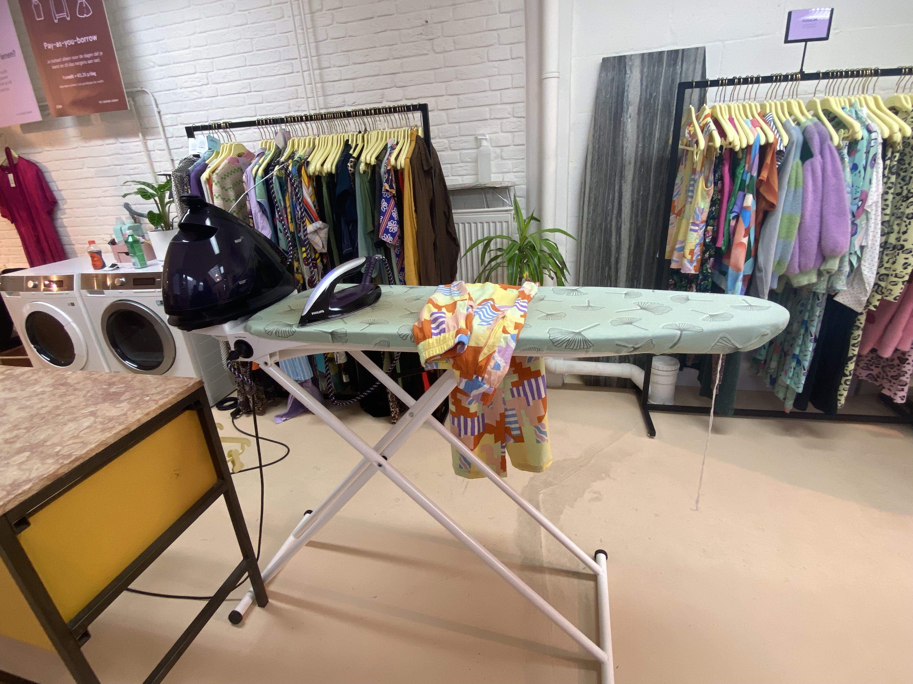

Duurzaamheid
Op Weg naar een Duurzamere Modewereld met LENA the fashion library De mode-industrie is een van de meest invloedrijke en populaire sectoren ter wereld. Echter, de schaduwzijde van deze bruisende industrie is de aanzienlijke impact op ons milieu. Hier komt LENA the fashion library om de hoek kijken met een vernieuwende benadering die niet alleen stijlvol is, maar ook een aanzienlijke bijdrage levert aan het milieu.

Waarom is het belangrijk?
Het begint allemaal met de eenvoudige, maar effectieve keuze om kleding te lenen in plaats van te kopen. Elk kledingstuk dat je koopt, heeft een diepgaand productieproces doorlopen, van het kweken van grondstoffen zoals katoen tot het vervaardigen van de stof, het verven, knippen en uiteindelijk het transporteren van het afgewerkte product naar winkels. Dit productieproces leidt tot aanzienlijke milieuvervuiling en energieverspilling.
Impact
LENA maakt een verschil door mensen in staat te stellen kleding te lenen, te dragen en terug te brengen wanneer ze er genoeg van hebben. Het resultaat? Minder noodzaak voor de productie van nieuwe kleding, wat leidt tot minder verspilling van natuurlijke hulpbronnen en een vermindering van de CO2-uitstoot. Met meer dan 25.000 kledingstukken die zijn uitgeleend, heeft LENA al aanzienlijk bijgedragen aan het verminderen van overproductie en overconsumptie.
De missie
LENA gelooft sterk in een circulaire benadering van mode. Dit houdt in dat kleding is ontworpen met een focus op levensduurverlenging. De kledingstukken die je bij LENA vindt, zijn van hoge kwaliteit en kunnen vele levens doorstaan. Wanneer kleding uiteindelijk versleten is, wordt deze niet weggegooid, maar kunnen de materialen worden gerecycled en hergebruikt voor nieuwe producten. Dit sluit de kringloop en vermindert de afvalberg die wordt gecreëerd door de 'wegwerp'-cultuur in de mode-industrie.
Duurzaamheid is niet alleen een trend, maar een cruciale stap naar een betere toekomst voor onze planeet. LENA the fashion library is toegewijd aan het verminderen van de negatieve impact van de mode-industrie en het bevorderen van bewuste keuzes in kledingconsumptie. Door kleding te lenen en te focussen op levensduurverlenging van kleding, laten ze zien dat modieus zijn en zorgen voor de aarde hand in hand kunnen gaan. Dus, de volgende keer dat je voor je kledingkast staat en nadenkt over een nieuwe aankoop, overweeg dan eens om LENA een bezoekje te brengen en samen met hen bij te dragen aan een duurzamere modewereld.